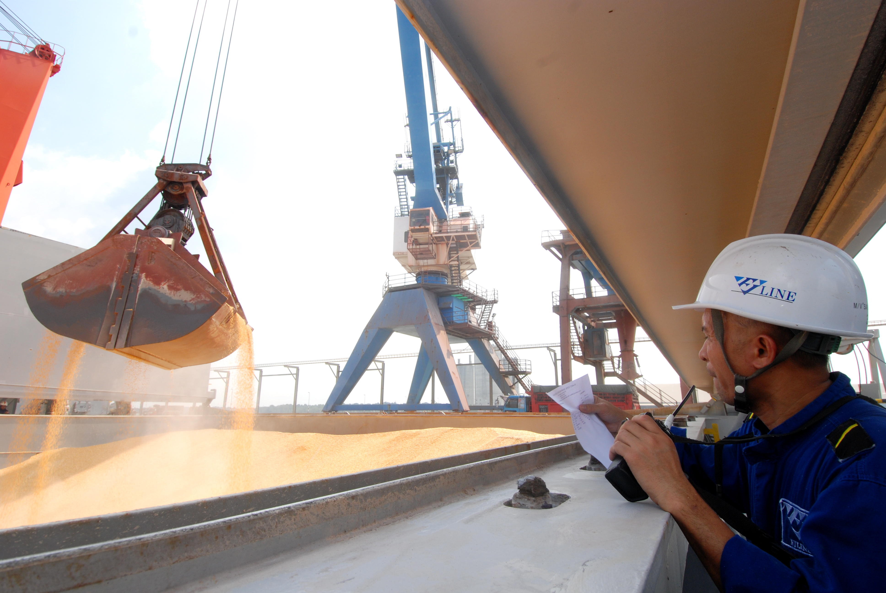
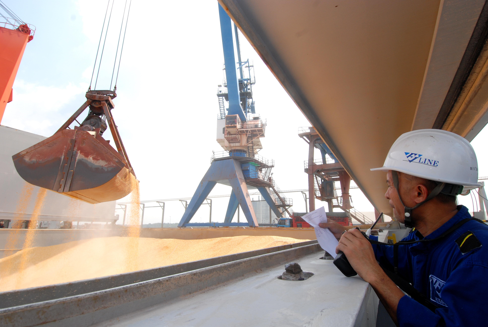

About Us
Non-containerised cargoes are handled at two facilities in Northport - a dedicated conventional cargo terminal in Southpoint, and the conventional cargo terminals in Northport for break bulk, liquid and dry bulk cargoes. Southpoint, formerly known as Southport, is the oldest section of Northport. Southpoint which has undergone massive rehabilitation and renewal offers a very broad range of facilities and services for handling a variety of conventional cargoes including liquid bulk, dry bulk and break bulk cargoes.
History
Northport (Malaysia) Bhd, situated at Port Klang, Malaysia is a member of MMC Group, Malaysia's leading utilities and infrastructure group with diversified businesses under three divisions: ports & logistics, energy & utilities and engineering & construction Northport is one of the largest multi-purpose ports of its kind in the national ports system offering dedicated facilities and services to handle wide variety of cargoes ranging from containers to cars, break bulk cargoes as well as capacity to handle liquid and dry bulk cargoes of all types and shipment sizes.
Its facilities are located at two locations - in Northport, Southpoint for conventional cargo handling and in Northport where the state-of-the-art container handling facilities are located. Northport logistics further adds value to the business entity. With a historical tradition dating back more than 100 years, Northport plays an important role in the development of the Malaysian economy and in its global outreach in the country's burgeoning international trade.
The central role played by Northport has been strengthened by its ability to offer the most extensive global shipping connectivity compared with any other ports in the country. This has appropriately earned Northport the reputation as Malaysia's "World Port". The premier world-class port is now linked to many ports worldwide which are served by major shipping lines including several world-ranking container liner operators offering one of the most comprehensive range of shipping services in the region.
Northport offers viable solutions to shippers with its superior state-of-the-art facilities, including real-time smart information application system designed to guarantee operational and cost efficiency to sustain speedy delivery and vessel turnaround time. Seizing the opportunities in the expansion of trade fostered by the trend towards globalization and trade liberalization, Northport has moved up the value chain by broadening its product base, including through "logistical integration" and increasing its attractiveness to a wider range shippers and shipping lines.
 
